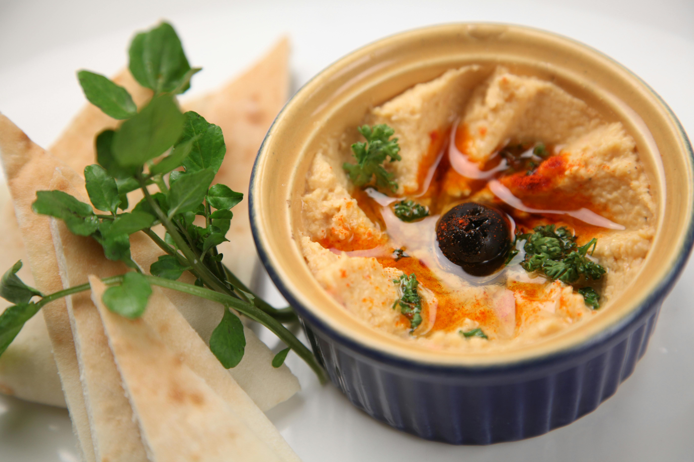

Lotus Cafe
Home
Locations
Menu

Appetizers
Roasted Vegetable Bruschetta
Sliced baguette topped with roasted bell peppers, cherry tomatoes, and basil, drizzled with balsamic glaze.
Crispy Zucchini Fritters
Lightly battered zucchini slices served with a side of tangy yogurt dipping sauce.
Stuffed Avocado Rolls
Fresh avocado halves filled with quinoa, black beans, corn, and diced tomatoes, served with a cilantro lime dipping sauce.
Hummus and Pita
Creamy hummus made with roasted garlic and served with fresh sliced pita bread.
Entrees
Mushroom Lentil Burger
House-made lentil and mushroom patty topped with caramelized onions, avocado, lettuce, and tomato, served on a whole wheat bun.
Butternut Squash Ravioli
Homemade ravioli stuffed with roasted butternut squash and sage-infused cashew cream sauce.
Vegetable Stir-Fry
A colorful medley of seasonal vegetables stir-fried in a ginger garlic sauce, served over noodles.
Spinach and Ricotta Stuffed Portobello
Grilled portobello mushroom cap filled with a savory blend of spinach, ricotta cheese, and herbs, topped with marinara sauce and melted mozzarella.
Desserts
Vegan Chocolate Avocado Mousse
Creamy avocado-based chocolate mousse sweetened with agave nectar, garnished with fresh berries.
Coconut Chia Pudding
Chia seeds soaked in coconut milk, sweetened with maple syrup, and topped with toasted coconut flakes.
Cheesecake
Our fan-favorite cheesecake, topped with a mango puree and seasonal fresh fruit.
Mixed Berry Crisp
A delightful blend of mixed berries baked with a crumbly oat topping, served with a scoop of vanilla bean ice cream (vegan option available).